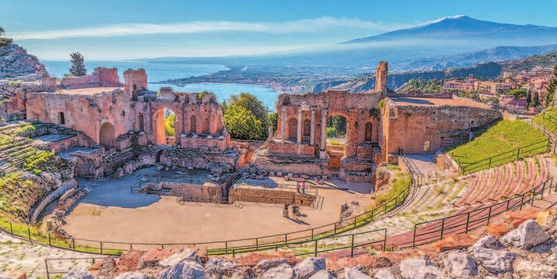
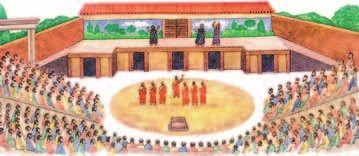
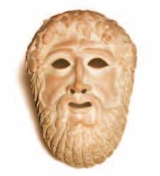
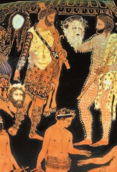

Рождение театра
Ты была в кукольном театре, на детских спектаклях и в Театре мимики и жеста. А самый первый театр появился в Афинах в VI веке до н. э. — и быстро разошёлся по всему греческому миру.
Он вырос из сельского праздника в честь бога — . Участники праздника надевали козлиные шкуры — изображали сатиров, весёлых спутников Диониса. И хором пели о нём песни — дифирамбы. Потом появились актёры и стали разыгрывать сценки в особых постройках — театрах.
Театр строили на склоне холма: места для зрителей шли полукругом, а крыши не было. Внизу — круглая площадка, . Там играли актёры, танцевали и пел хор, а в центре стоял алтарь Диониса — перед спектаклем жрецы приносили жертвы.
За орхестрой — : постройка, где переодевались актёры. На её стену вешали простые декорации. Были даже машины: они спускали «богов» с неба, гремели громом и сверкали молниями.
Театр в Афинах стоял на склоне Акрополя, у храма Диониса, и вмещал до 17 тысяч зрителей. Это в полтора раза больше, чем на концерте Артура Пирожкова в «Live Арене», где не было свободных мест.
В первом ряду сидели знаменитые граждане. Вход был по жетонам, но Перикл раздавал беднякам билеты бесплатно — чтобы в театр могли ходить все граждане.
Ставили трагедии и комедии. Платил за постановку — его выбирали из богатых граждан.
Важную роль в жизни древнегреческого общества играли театральные представления. Впервые они появились в Афинах в VI (6) веке до н. э., а затем быстро распространились по всему греческому миру.
Театральные представления выросли из сельских праздников в честь бога Диониса — Великих Дионисий. Участники празднеств наряжались в козлиные шкуры, изображая сатиров, спутников бога Диониса. Хором они распевали песни о Дионисе, которые назывались дифирамбами. Позже появились актёры, которые разыгрывали небольшие сценки в специально построенных сооружениях — театрах.
Театры строили на склоне холма, по которому полукругом располагались места для зрителей. Сценическая площадка находилась под открытым небом.
Любопытные детали. Частью театра являлась орхестра, на которой выступали актёры, танцоры и хор. В центре орхестры стоял алтарь Диониса, на котором перед началом представлений жрецы совершали жертвоприношения. Позади орхестры находилась скена — сценическая постройка, где переодевались актёры, к её стене крепились нехитрые декорации, обозначавшие место действия. Во время представлений использовали различные машины и приспособления, которые спускали «богов» с небес на землю, имитировали раскаты грома и сверкание молний.
В Афинах театр был сооружён на склоне Акрополя возле храма Диониса и вмещал до 17 тысяч зрителей. Первый ряд обычно занимали знаменитые граждане полиса. Для посещения спектакля зрители покупали входные жетоны. Перикл ввёл бесплатную раздачу «входных билетов» для бедняков, чтобы все граждане могли посещать театральные представления.
В театрах Древней Греции ставили трагедии и комедии. Постановку на свои средства осуществлял хорег, которого выбирали из состоятельных граждан.
- Как возник театр в Древней Греции?
1. Театр вырос из праздника Диониса. Что в самом театре об этом напоминало? Найди два признака.
2. Зачем Перикл раздавал беднякам бесплатные билеты? Свяжи с платой за должности из §29.

Трагедия
В играли всего три актёра — на все роли! Представь «Алису в Стране чудес», где трое играют и Алису, и Шляпника, и Королеву, просто меняя маски. И все актёры — только мужчины, даже в женских ролях.
Актёры надевали длинные одежды, обувь на высокой подошве и маски. Так их было видно даже с самых верхних рядов. В Театре мимики и жеста ты видела: актёры молчат, а за них говорят другие. У греков наоборот: голос свой, а лицо спрятано под маской.
Рядом с актёрами пел хор — полтора десятка человек. Хор объяснял, что происходит, и говорил главную мысль автора. Руководил хором . Ты в «Алисе» была одним из цветов и пела вместе со всеми — почти как в греческом хоре.
Трагедии писали , Софокл и Еврипид. Брали сюжеты из истории и мифов. В трагедии «Персы» Эсхил показал поход Ксеркса и победу при Саламине (§28) — а в зрителях сидели те, кто сам там сражался.
В трагедии «Прикованный Прометей» герой сначала помогал Зевсу. Но когда Зевс решил погубить людей, Прометей восстал: украл небесный огонь и принёс его людям. Огонь пробудил людей к разумной жизни. За это Зевс приковал Прометея к скале, и каждый день орёл клевал ему печень. Освободил Прометея Геракл (§21).
У Эсхила все боги угождают Зевсу, и только Прометей свободен. Он стал символом борьбы за людей против злых и тёмных сил.
Еврипид в трагедии «Медея» показал сильные чувства и переживания героини.
Герои трагедий ошибались, у них были слабости. Но все они хотели справедливости и не теряли достоинства даже в самой страшной беде.
В этом жанре театрального представления играли три актёра. Все роли исполняли только мужчины. Они надевали длинные одежды, на ногах носили обувь на высокой подошве, а лицо закрывали маской. В таком одеянии актёр хорошо был виден даже с верхних рядов. Выступление актёра сопровождал хор из полутора десятков актёров, который выражал основную мысль автора, комментируя происходящее на сцене. Руководителя хора называли корифей.
Трагедии создавали известные драматурги Эсхил, Софокл и Еврипид. Основой сюжета были исторические события и мифологические темы. Эсхил в трагедии «Персы» показал поход Ксеркса в Грецию и победу греков при Саламине.
В трагедии «Прикованный Прометей» главный герой во время борьбы с Кроносом встал на сторону Зевса. Но когда верховный бог вознамерился уничтожить людей, Прометей восстал против него. Он похитил небесный огонь и принёс его людям. Огонь пробудил их к сознательной жизни. За эти деяния по приказанию Зевса Прометей был прикован к скале, куда каждый день прилетал орёл и клевал его печень, обрекая его на муки.
Эсхил противопоставил угодничеству богов перед Зевсом свободолюбие Прометея. Освободил мужественного Прометея, согласно мифу, Геракл. Образ Прометея в трагедии предстаёт символом борьбы за освобождение человечества от злых и тёмных сил.
В трагедии «Медея» её автор, драматург Еврипид, показал страсти и переживания главной героини.
Герои трагедий совершали ошибки, имели слабости и недостатки, но все они стремились добиться справедливости. Они сохраняли человеческое достоинство в самых сложных ситуациях и не теряли величия духа даже в момент гибели.

- Какие проблемы жизни человека отражались в греческих трагедиях?
3. Зачем актёрам трагедии маски, длинные одежды и высокая подошва? Посмотри на схему «Сколько зрителей».
4. Почему афинянам было важно увидеть Саламин на сцене? Вспомни, кто был гребцами на триерах (§28).
5. Прометей пошёл против Зевса ради людей. Что общего у него с героями из последнего абзаца раздела?

Комедия
выросла из весёлых народных гуляний и шествий в честь Диониса. Сюжеты брали из обычной жизни: смеялись над продажными чиновниками, бездарными полководцами, глупыми политиками и над пороками людей. Было много выдумки, веселья и грубоватых шуток.
Помнишь «ВАЛЛ-И»? Люди на корабле так обленились, что не встают с кресел. Мультфильм смеётся над ленью — так и греческая комедия смеялась над пороками.
«Отцом комедии» называют . Сохранились одиннадцать его комедий. В комедии «Птицы» два афинянина устали от тревожной жизни дома и отправились искать счастливую страну — и с ними случилась куча приключений.
Спектакли были состязанием — как танцевальный батл: выступают по очереди, а судьи выбирают лучших. Автору лучшей трагедии сначала дарили козла, автору комедии — корзину фиг и амфору вина. Позже победителей награждали венком из плюща. Награду получали и лучший хорег, и лучший актёр.
Комедия как жанр театрального представления возникла из народных гуляний и шествий, связанных с культом Диониса. Темы комедий брали из повседневной жизни, показывая продажность должностных лиц, бездарность полководцев, глупость политиков, пороки людей. В комедиях было много выдумки, веселья и грубоватых шуток.
«Отцом комедии» называют Аристофана. Сохранились одиннадцать его комедий. В основе комедии «Птицы» — путешествие двух афинян, Писфетера и Эвельпида. Им надоела полная тревог и переживаний жизнь на родине, и они отправляются на поиски блаженной страны, сопровождающиеся различными приключениями.
Театральные представления организовывались как состязания. После окончания представления судьи вручали награды драматургам, пьесы которых были признаны лучшими. Первоначально автору трагедии преподносили козла, а автору комедии — корзину с фигами и амфору с вином. Позже победителей награждали венком из плюща. Награду получали также лучшие хорег и актёр.
- Как ты думаешь, какие пороки высмеивались в греческих комедиях?
6. Комедии смеялись над продажными чиновниками и бездарными полководцами. А кто в Афинах выбирал чиновников и полководцев (§29)? Зачем им такие спектакли?
7. Театр был состязанием. Где ещё у афинян спорили две стороны, а решали судьи? Вспомни §29.
Подведём итоги
- Что представляли собой праздники Великие Дионисии?
- Опиши план театра, используя греческие названия. Какие из этих элементов используются в современном театре?
- Какие темы лежали в основе греческих пьес?
- Подумай, почему в наши дни символом театра являются две маски — весёлая и грустная.
Сформулируй ответ на главный вопрос параграфа — можно ли назвать древнегреческий театр «школой для взрослых»? Приведи два-три довода.
Проверь себя
Нажимай по очереди — от самого древнего к самому близкому к нам. Последнее событие — уже нашей эры.
1. Из чего вырос греческий театр?
2. Что такое орхестра?
3. Сколько актёров играли в трагедии?
4. Кто написал трагедию «Персы» о битве при Саламине?
5. Над кем смеялась греческая комедия?
6. Кто платил за постановку спектакля?
Расскажи вслух
Как родился театр
- Великие Дионисии: козлиные шкуры, хор поёт дифирамбы.
- Потом появились актёры и театры; первые представления — в Афинах в VI веке до н. э.
- Театр в Афинах на склоне Акрополя — до 17 тысяч зрителей; бесплатные билеты для бедных от Перикла.
Как устроен греческий театр
- Места для зрителей полукругом на склоне, крыши нет.
- Орхестра с алтарём Диониса — для актёров и хора.
- Скена — для переодевания и декораций; машины для «богов», грома и молний.
Трагедия
- Три актёра-мужчины в масках, на высокой подошве; хор и корифей.
- Эсхил («Персы», «Прикованный Прометей»), Софокл, Еврипид («Медея»).
- Герои ошибаются, но ищут справедливость и не теряют достоинства.
Комедия и награды
- Из народных гуляний; смеётся над продажными, бездарными, глупыми.
- Аристофан — «отец комедии», «Птицы».
- Спектакли — состязание: козёл, корзина фиг и вино, потом венок из плюща.
Главный вопрос: театр — «школа для взрослых»?
- На сцене граждане учились жить, бороться и побеждать.
- Трагедия учила мужеству и справедливости.
- Комедия высмеивала пороки — граждане учились не выбирать плохих правителей.